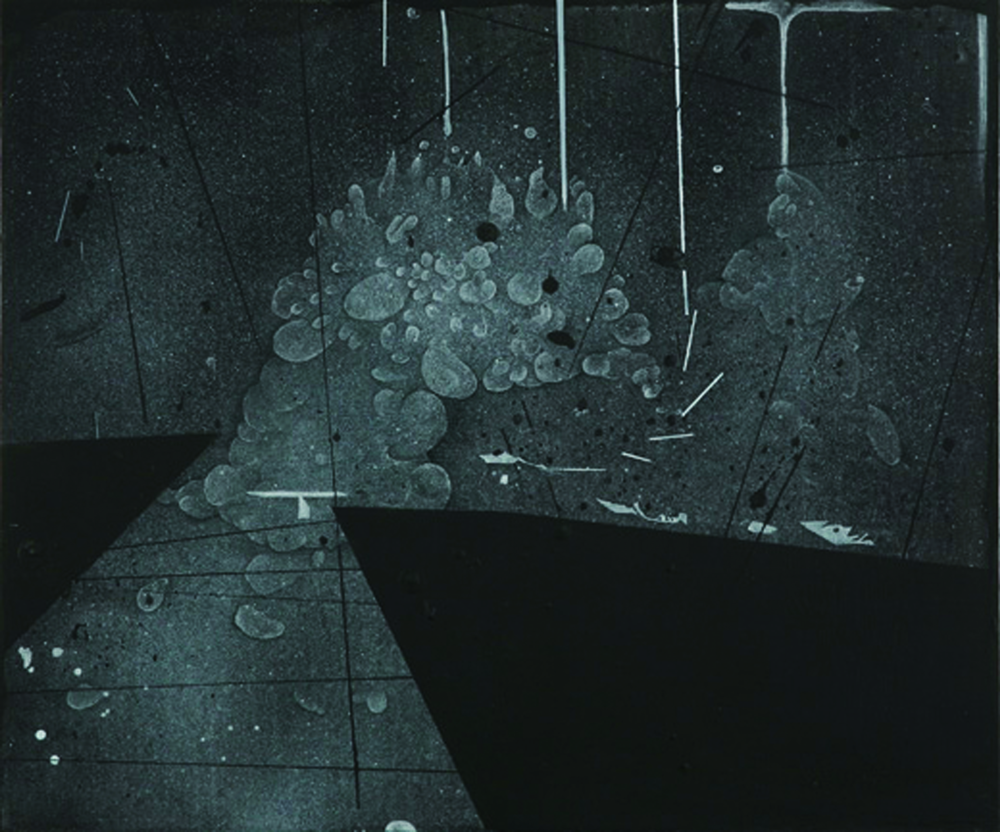
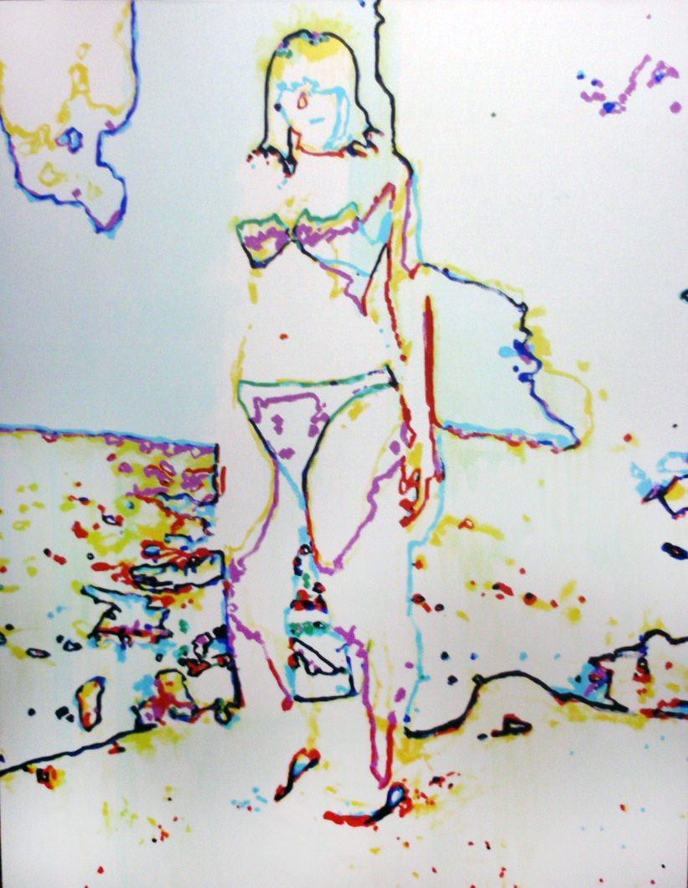

Tsuda Shoichi
Works Index
Site-specific · Story-driven
作品
枠組みを利用し、空間と共鳴する。
Scroll
Selected Works — Series
10
01
左美都の神話と伝承
Myth and Tradition
02
異体
Variant Forms
03
洞窟
The Cave
04
素描
Drawings
05
抽象
Abstract
06
難民(子ども)
Refugees
07
子ども兵士
Child Soldiers

08
黒の時代
The Black Period

09
2010年～2011年
2010 – 2011
10
標本美術
Specimen Art
 01
01


 [apocalypse] - III】 - 修正後ー.jpg)